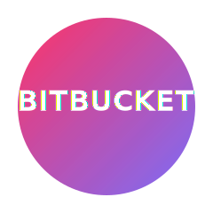

Skill
Bitbucket
Bitbucket ek Git-based source code management (SCM) tool hai jise Atlassian ne develop kiya hai. Ye developers ko secure aur collaborative environment me code versioning, branching, aur continuous deployment ke liye help karta hai.

Example Commands
# Clone a Bitbucket repository
git clone https://bitbucket.org/team/repo.git
# Create and switch to a new branch
git checkout -b feature/new-ui
# Commit and push changes
git add .
git commit -m "Added new UI components"
git push origin feature/new-ui
# Merge changes through Pull Request (from UI)
Open example.txt
Core Features of Bitbucket
- Private Repositories: Secure Git hosting for private teams and organizations.
- Branching & Merging: Simplifies collaborative development using feature branches.
- Pull Requests: Review and merge code changes with inline comments and approvals.
- Bitbucket Pipelines: Integrated CI/CD solution for automated build, test, and deploy workflows.
- Jira Integration: Directly connect code commits, branches, and pull requests with Jira issues.
- Access Control: Fine-grained permissions for teams, users, and repositories.
- Webhooks & API: Trigger external systems or automate tasks when events occur in a repo.
Bitbucket Pipeline Example
image: php:8.1
pipelines:
default:
- step:
name: "Deploy Laravel App"
script:
- apt-get update && apt-get install -y unzip git
- composer install --no-interaction --prefer-dist
- php artisan migrate --force
- echo "Deployment Successful!"
Yeh example Bitbucket Pipeline ka basic CI/CD setup dikhata hai jisme Laravel app ko automatic deploy karne ke liye composer aur artisan commands chalaye gaye hain.
Why Bitbucket?
- Seamless integration with Jira and Confluence (Atlassian ecosystem).
- In-built Pipelines for automated testing and deployment.
- Strong access controls with team and project-level permissions.
- Supports Git and Mercurial (legacy).
- Perfect for collaborative development and version tracking.